Table of contents
Quality control: checking the quality of audio and video files
🚧 This page is currently under construction 🚧

Last updated: 02 November 2021
MediaArea tools for QC (quality checking/quality control)
Open source tools available from MediaArea
MediaInfo
MediaInfo is a tool which allows you to look at a summary of the structural metadata of media files. Below is a comparison of how MediaInfo presents the metadata information on a PC and on a Mac, both using Tree view.
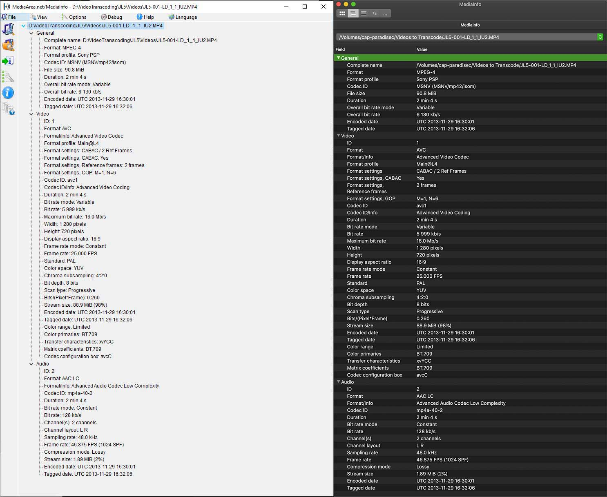
You can look at multiple files at one time using the app, but be warned- if you highlight and then select open with MediaInfo on a PC, each metadata report will open a new window. On a Mac, you get one open window, but you can select which file to view from a dropdown menu in the address bar. The next section explains another option to view multiple file reports without having to look at one report at a time.
Bulk output MediaInfo reoprts: Windows
This section outlines a means to extract metadata from multiple files at one time, outputting targeted metadata highlights to a csv, using a PC.
Using MediaInfo GUI v21.09, open the program, then add media to explore. To do this press icon Select a folder to examine, located on left pannel of window, or go to the MediaInfo menu and select File>Open>Folder…. It is best if you have only the media you want to examine in that folder and avoid adding nested folders. The image below shows all of the videos I have added. To get this view, go to the menu and select View, then select sheet.
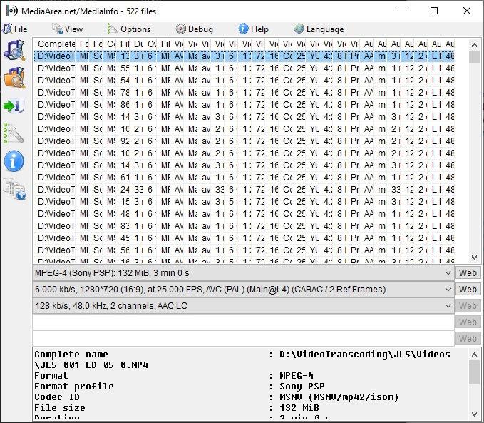
To select what specifications you want to export to a csv, go to Options>Preferences, or just click on the wrench icon to the left. The preference window will open. Under Customize select Sheet and then New….
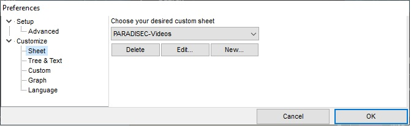
You will then be able to make your choices for the attributes you wish to export. You may need to experiment with this. I have selected the following 29 attributes to include in my report. You’ll notice the three categories of metadata: General, Video, Audio. These correlate to the sections of metadata found in the MediaInfo reports as seen in the comparison image above.
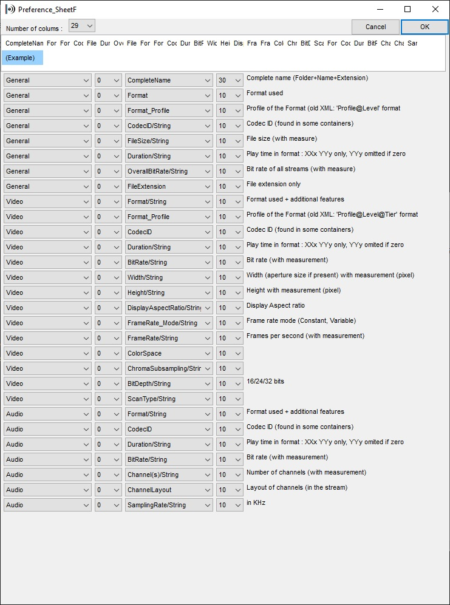
Once you have edited your target specifications to be output in your report, a new .csv is created with this information and is saved here: C:\Users\“YourUserName”\AppData\Roaming\MediaInfo\Plugin\Sheet. If you want to share this customisation with your team, you need only send them the .csv and have them place it in the correct folder, so that they do not have to recreate the process. This is what the content of that .csv plugin:
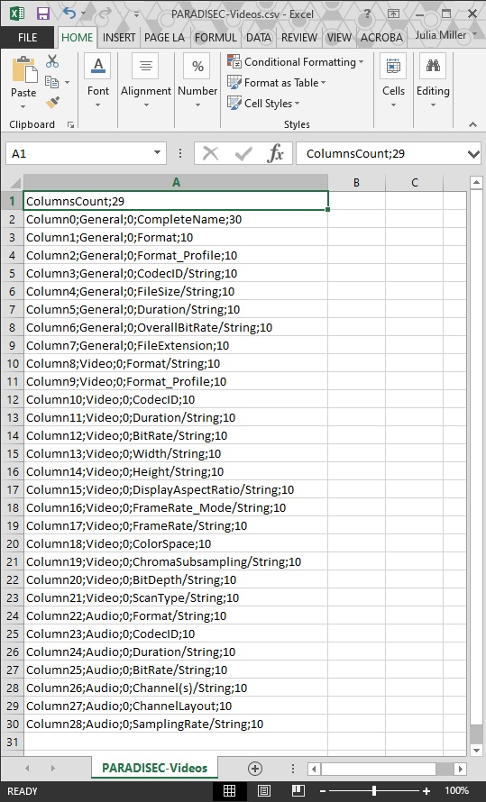
When you have saved your Custom Sheet choices, you are ready to export. First, go to Preferences again to select your custom sheet from the dropdown menu:
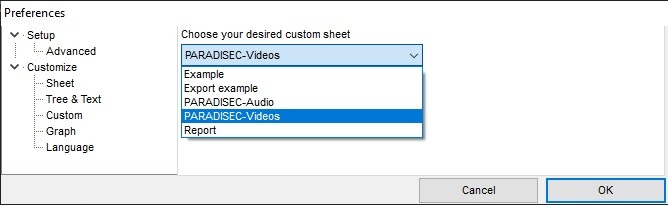
The icon to the left with the arrow and the “i” is the export function. Alternatively, you can go to File>Export in the menu. This window will open, directing you to choose your export format.
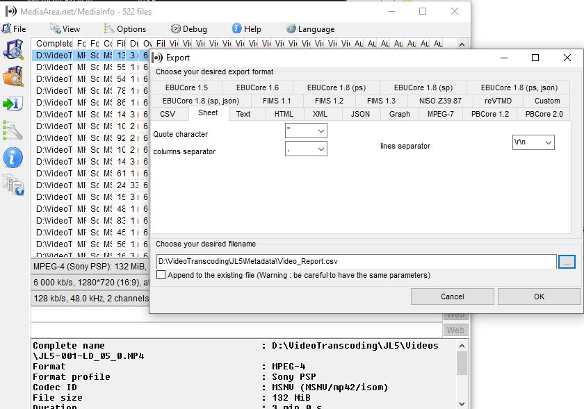
Click on the Sheet tab, select the comma from the dropdown menu for the columns separator, then name your output file and select the location where you want to save it.
Bulk output MediaInfo reports: Mac
This section outlines a means to extract metadata from multiple files at one time, outputting targeted metadata highlights to a csv, using a Mac.
I have downloaded and installed the app from the Mac App Store, as suggested on the MediaInfo webpage. The Mac MediaInfo app differs from the Windows version in that you cannot view sheets, or export bulk reports using the GUI.
You first need to create a .txt file that lists the specifications you want to export, and name this file “Options.txt”. Again, as with the Windows specifications, you will need to experiment with how they are named. Here is some suggested content for Options.txt for video reporting:
General;%FileName%,%Format%,%Format_Profile%,%CodecID%,%FileSize%,%Duration%,%OverallBitRate%,%FileExtension%,
Video;%Format%,%CodecID%,%Width%,%Height%,%DisplayAspectRatio%,%FrameRate%,%ColorSpace%,%ChromaSubsampling%,%BitDepth%,%ScanType%,%Compression_Mode%,
Audio;%Channel(s)%,%ChannelLayout%,%SamplingRate%,
File_End;\r\n
Place the Options.txt in the same folder as the videos you wish to examine.
Open Terminal and navigate to the directory where your videos and the Options.txt is located.
Then type the following into the terminal:
MediaInfo --Output=file://options.txt /Volumes/"YourDirectory" \*.* > output.csv
Unfortunately, this will output a .csv without headers for the columns. My fix for this: I have a separate .csv saved with just the headers to paste in each newly exported report.
If you are not able to install MediaInfo onto your computer, there is a web version of MediaInfo where you can create and download reports of your video files via the web browser. Your media stays safe, as nothing is actually uploaded to their servers. MediaInfoOnline
Media Conch
Media Conch is a tool which enables you to view batch MediaInfo reports. You can create policies that checks your media against certain parameters, determining if the metadata fits your specific needs. Below public policy that checks if an .mp4 video has H.264 encoding or not. You can find this public policy on the Public Policy tab within the app.
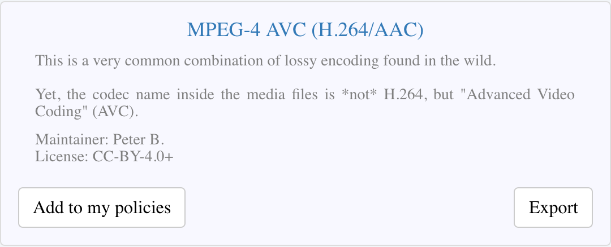
This is the description of the checks this policy is performing:
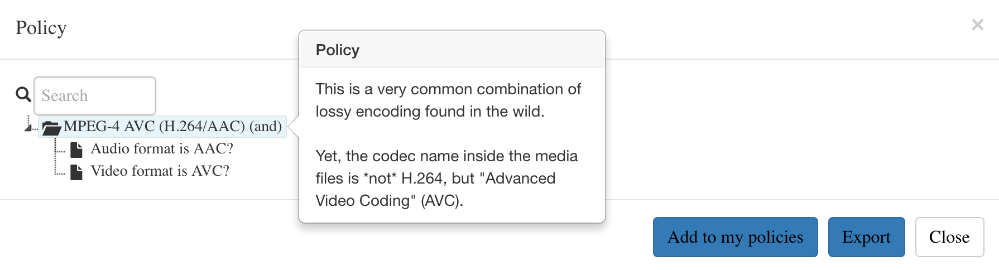
Here is a policy I created for PARADISEC, to determine if the MXF has conformed to all of our target parameters. This checks if the MXF is lossless and has the expected colour space and chroma subsampling of YUV 4:2:2, and has a bit depth of 8, etc. Policy checking can be done across multiple files at once.
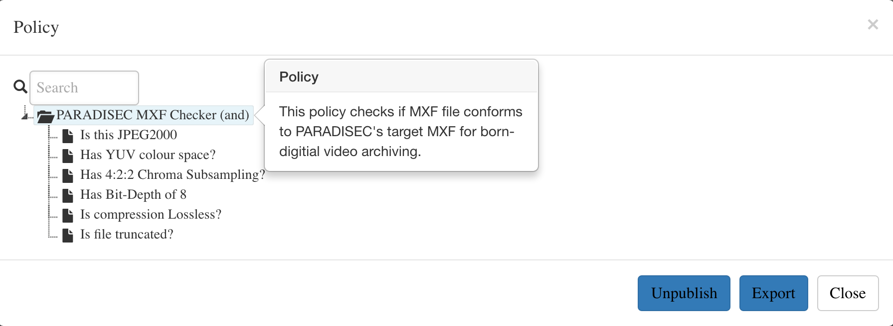
Here are the results from the MXF policy check.
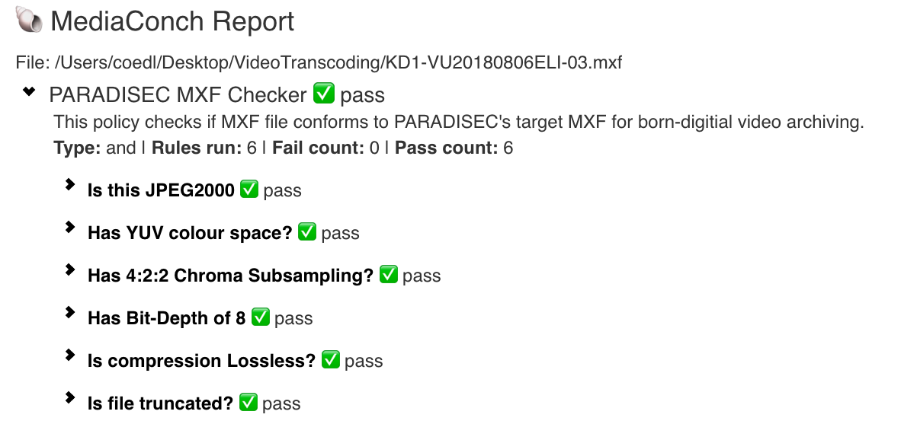
Media Conch also allows you to view MediaInfo reports within the program as well as the more technical Media Tracereports, which present the binary architecture of the files as defined by MediaInfo.
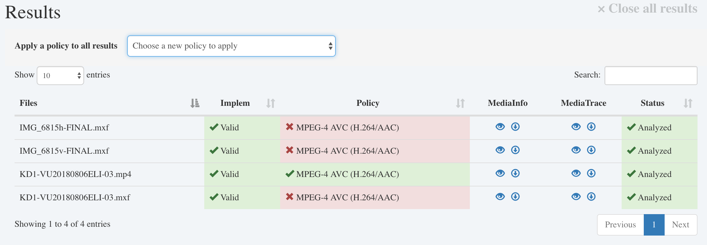
QC Tools
QC Tools offers tools that allow users to investigate the quality of digitised videos using filters and analytical tools. You can select various filters in the graph mode as seen in the image below.
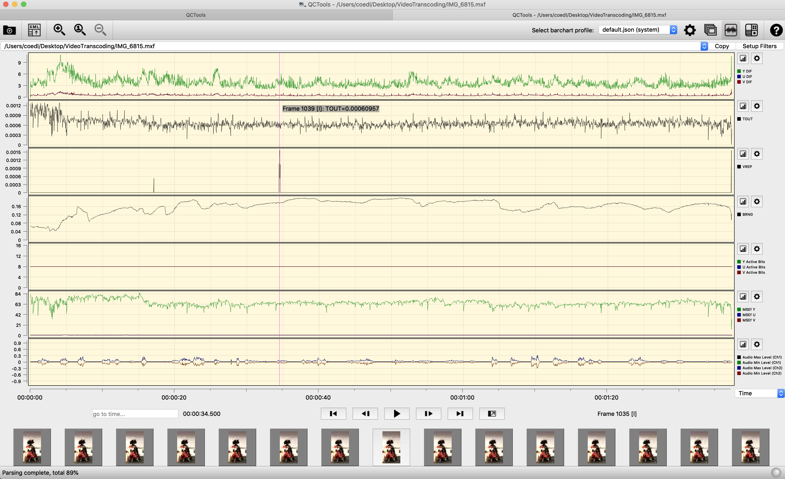
as well as in the player mode
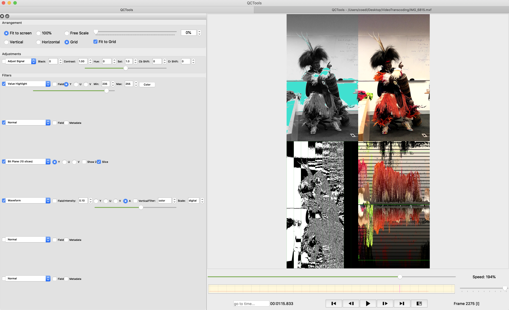
Visit this QCTools page for descriptions of their playback filters.
BWF MetaEdit
BWF MetaEdit - allows up to view and edit BEXT chunks in BWF audio files